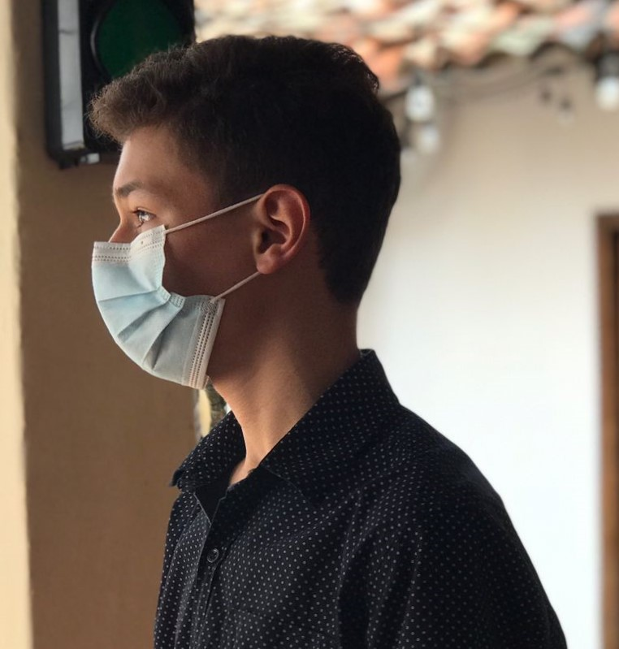

|  |
||
|
Yo naci el 6 de marzo del 2005, en el departamento de comayagua, actualmente sigo viviendo aqui, cuando era chico era muy distinto a ahora, era mas relajero y asi con el pasar del tiempo como escuela me iba dando cuenta de que estaban bien y que no, yo era el de las notas normales en la escuela fue hasta 5to y 6to grado que consegui mejores notas, algo que siempre tuve es ser timido y si tenia amigos era porque ellos me hablaban con era el caso de 7mo grado, que hasta tiempo despues consegui amigos, en ese año me sentia perdido no era yo el que estuvo ahi, no me conocia, pero poco estaba adaptandome al colegio y como cosa de 2 años cambio la mayoria de cosas tenia mas dedicación me iba mucho mejor en las notas, era el de antes, me sentia cambiado, ya en 10mo empieza la pandemia fue muy raro, era la primera vez que habian clases virtuales, no era tan complicado pero siempre habian dificultades en esos dos años aparte de estar en las clases, era mas distinto ya o convivir con nadie pasaron tantas cosas buenas y malas, alguna me hicieron reflexionar, oara llegar a ser quien soy ahora. |
||
| 0 | 0 | 0 |